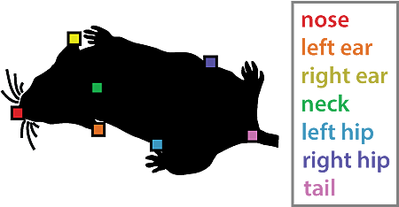

How To guide
This guide covers the all of the tasks you can perform with ethome, roughly in the order you'd want to do them. A very basic outline is also in the Quick Start section of the readme.
This guide covers basic usage -- it doesn't comprehensively describe how to use every function or feature in ethome; you can consult the API docs for complete information on usage. After installation, cut and paste the code samples below to follow along.
0 Installation
Just do
pip install ethome-ml
You may want to also install tensorflow if you want to use the CNN features for a resident-intruder setup.
1 Loading your data
ethome makes it easy to perform common machine learning analyses on pose-tracking data, perhaps in combination with behavioral annotations. The basic object of the package is an extended pandas DataFrame, which provides associated support functions that are suited for behavior analysis. The DataFrame object houses data from one or more video's worth of pose data, along with associated metadata for each video. The key thing you need to get started, then, is pose tracking data. At present, data from DeepLabCut, SLEAP or pose data stored in NWB files is supported (via the ndx-pose extension).
1a Loading NWB files
The NeurodataWithoutBorders format can store both pose tracking data and behavioral annotations, along with associated metadata. If all of your data is stored in this format, then it's easy to import it into ethome:
from ethome import create_dataset
from ethome.io import get_sample_nwb_paths
fn_in = get_sample_nwb_paths()
recordings = create_dataset(fn_in)
You can provide multiple recordings, just provide a list of paths instead. Each separate file is assumed to represent a similar setup but different session/experiment/time period. I.e., they're not meant to represent the same session from different cameras, or the same session for different animals.
1b Loading tracking files
If your data is stored in DeepLabCut csvs or h5 files, or SLEAP exported analysis h5 files, perhaps with accompanying behavioral annotations from BORIS, then you'll have to associate these with each other, and provide relevant metadata yourself. Sections 1b -> 1e outline how to do this. Data stored in NWB files have already addressed each of these steps and you can skip these sections.
Let's get some sample data to play with:
from ethome.io import get_sample_data_paths
tracking_files, boris_files = get_sample_data_paths()
These are just lists of csv files containing our input data.
To import just your tracking data, you can simple do:
recordings = create_dataset(tracking_files)
But generally, you may want to provide metadata with each tracking file. This can be done just by providing keyword arguments:
fps = 30
resolution = (1200, 1600)
recordings = create_dataset(tracking_files, fps = fps, resolution = resolution)
This loads the dataframe, with fps and resolution associated to each input csv.
NOTE: Any keyword that is a list of the same length as the tracking files is zipped with the tracking files accordingly. That is, if the resolution of the videos is different:
fps = 30
resolutions = [(1200, 1600), (800, 1200)]
recordings = create_dataset(tracking_files[:2], fps = fps, resolution = resolutions)
Rather than assigning the same value to all videos, the entry resolutions[i] would then be associated with tracking_csvs[i]. These lists, therefore, must be sorted appropriately.
NOTE: It is strongly recommended the fps field is provided for all videos, so that frame numbers can be converted into times, which is needed for loading data from other sources (e.g. BORIS).
1c Loading behavioral annotation data
The (optional) labels keyword is used to include corresponding behavioral annotation files:
recordings = create_dataset(tracking_files, labels = boris_files)
Behavior annotations should be exported from BORIS, in tabular form (as a csv), for each video to be imported.
1d Loading video data
The (optional) video keyword is used to provide the path(s) to the corresponding video(s) that were tracked. If available, this is used by some of the visualization functions.
1e Scaling pose data
There is some support for scaling the data to get it into desired units, consistent across all recordings.
If the tracking is in pixels and you do want to rescale it to some physical distance, you should provide keywords frame_width, frame_width_units and resolution for all videos. This ensures the entire dataset is using the same units. The package will use these values for each video to rescale the (presumed) pixel coordinates to physical coordinates.
resolution is a tuple (H,W) in pixels of the videos and frame_width is the width of the image, in units frame_width_units.
By default, all coordinates are converted to 'mm'. The pair 'units':'mm' is added to the metadata dictionary for each video. You can specify the units by providing the units key yourself. Supported units include: 'mm', 'cm', 'm', 'in', 'ft'.
If the DLC/tracking files are already in desired units, either in physical distances, or pixels, then do not provide all of the fields frame_width, resolution, and frame_width_units. If you want to keep track of the units, you can add a units key to the metadata.
1f Renaming things
If your tracking project named the animals some way, but you want them named another way in this dataframe, you can provide an animal_renamer dictionary as an argument to the constructor:
recordings = create_dataset(tracking_files,
labels = boris_files,
fps = 30,
animal_renamer={'adult': 'resident', 'juvenile':'intruder'})
Similarly with the body parts, you can provide a part_renamer dictionary.
1g Metadata
When recordings is created, additional metadata is computed and accessible via:
recordings.metadatahouses the following attributes:details: all the metadata given to create_datasetvideos: list of videos given inmetadatan_videos: number of videos in DataFramelabel_key: associates numbers with text labels for each behaviorreverse_label_key: associates text labels for each behavior number
recordings.pose, houses pose information:body_parts: list of body parts loaded from the tracking file(s)animals: list of animals loaded from the tracking files(s)animal_setup: dictionary detailing animal parts and namesraw_track_columns: all original columns names loaded from tracking
2 Interpolate low-confidence pose tracking
Some simple support for interpolating low-confidence tracks in DLC/SLEAP is provided. Predicted positions below a given confidence level can be noisy and unreliable, and better tracks may be obtained by removing these predictions and interpolating from more confident predictions on either side of the uncertain prediction.
You can achieve this with:
from ethome import interpolate_lowconf_points
interpolate_lowconf_points(recordings)
3 Generate features
To do machine learning you'll want to create features from the pose tracking data. ethome can help you do this in a few different ways. You can either use one of the feature-making functions provided or create a custom feature-making function, or custom class.
To use the inbuilt functions you can reference them by their identifying string, or provide the function itself to the features.add function. For instance, to compute the distances between all body parts (within and between animals), you could do:
recordings.features.add('distances')
This will compute and add the distances between all body parts of all animals.
3a In-built support for resident-intruder setup
First, if your setup is a social mouse study, involving two mice, similar enough to the standard resident-intruder setup, then you can use some pre-designed feature sets. The body parts that are tracked must be those from the MARS dataset [1] (See Figure). The MARS dataset is the Mouse Action Recognition System dataset, published by Segalin et al. It is a large, annotated mouse pose dataset that is useful for building ML models of mouse behavior. ethome uses pretrained models and feature sets that have been demonstrated to perform well at mouse action recognition on this dataset -- a combination of these models and features placed 3rd in AICrowd's Multiagent behavior contest in 2021.
You will have to have labeled and tracked your mice in DLC/SLEAP in the same way. (with the same animal and body part names. Though ethome's create_dataset function can help you rename them appropriately)

Specifically, the animals must be named resident and intruder, and the body parts must be: nose, leftear, rightear, neck, lefthip, righthip, and tail.
The cnn1d_prob, mars, mars_reduced and social functions can be used to make features for this setup.
cnn1d_probruns a 1D CNN and outputs prediction probabilities of three behaviors (attack, mount, and investigation). Even if you're not interested in these exact behaviors, they may still be useful for predicting the occurance of other behaviors, as part of an ensemble model. The details of this pretrained model are found here: https://github.com/benlansdell/mabetask1_ml.marscomputes a long list of features as used in the MARS paper. You can refer to that paper for more details.mars_reducedis a reduced version of the MARS featuressocialis a set of features that only involve measures of one animal in relation to the other.
3b Generic features that work for any animal setup
You can generate more generic features using the following inbuilt feature creation options:
centroidthe centroid of each animal's body partscentroid_velocitythe velocity of the centroidscentroid_interanimalthe distances between the centroids of all the animalscentroid_interanimal_speedthe rate of change ofcentroid_interanimalintrabodypartspeedsthe speeds of all body partsintrabodypartdistancesthe distances between all animals body parts (inter- and intra-animal)distancesis an alias forintrabodypartdistances
NOTE: These work for any animal setup, not just resident-intruder with specific body parts, as assumed for the mars features. Animals don't have to be labeled following the MARS convention for these features.
3c Add your own features
There are two ways to add your own feature sets to your DataFrame.
The first is to create a function that takes a pandas DataFrame, and returns a new DataFrame with the features you want to add. For example:
def diff_cols(df, required_columns = []):
return df[required_columns].diff()
recordings.features.add(diff_cols, required_columns = ['resident_x_neck', 'resident_y_neck'])
The second is to create a class that has, at the least, the method transform.
class BodyPartDiff:
def __init__(self, required_columns):
self.required_columns = required_columns
def transform(self, df):
return df[self.required_columns].diff()
head_diff = BodyPartDiff(['resident_x_neck', 'resident_y_neck'])
recordings.features.add(head_diff)
This is more verbose than the above, but has the advantage that the it can be re-used. E.g. you may want to fit the instance to training data and apply it to test data, similar to an sklearn model.
3d Features manipulation
By default, when new features are added to the dataframe, they are considered 'active'. Active simply means they can be accessed through the attribute:
recordings.ml.features
provided for convenience. You can pass this to any ML method for further processing. This .ml.features helps manage the long list of features you will have created in the steps above. You can always just treat recordings like a Pandas DataFrame and do ML how you would normally.
To activate features you can use recordings.features.activate, and to deactivate features you can use recordings.features.deactivate. Deactivating keeps them in the DataFrame, but just no longer includes those features in the recordings.ml.features view.
4a Fit a model for behavior classification
Ok! All the work is done and now you can easily train a behavior classifier based on the features you've computed and the labels provided.
E.g.
from sklearn.ensemble import RandomForestClassifier
from sklearn.model_selection import cross_val_score, LeaveOneGroupOut
cv = LeaveOneGroupOut()
model = RandomForestClassifier()
cross_val_score(model, recordings.ml.features, recordings.ml.labels, recordings.ml.group, cv = cv)
A convenience function that essentially runs the above lines is provided,
add_randomforest_predictions:
from ethome import add_randomforest_predictions
add_randomforest_predictions(recordings)
which can be used as a starting point for developing behavior classifiers.
4b Unsupervised learning
Some basic functions are also provided that perform unsupervised learning. For instance
embedding = compute_umap_embedding(recordings, recordings.features.active, N_rows = 10000)
recordings[['embedding_0', 'embedding_1']] = embedding
Computes and stores a UMAP embedding of the computed features.
5 Plotting
You can plot this embedding via
fig, ax = plot_embedding(recordings, color_col = 'prediction')
There's also an interactive widget to explore the pose data
%matplotlib inline
filename = dataset.metadata.videos[0]
interactive_tracks(recordingsrecordings,
filename,
start_frame = 3000,
stop_frame = 4000)
viewable in a Jupyter notebook.
6 Make output movies
Now we have our model we can make a video of its predictions. Provide the column names whose state we're going to overlay on the video, along with the directory to output the videos:
recordings.io.save_movie(['label', 'prediction'], '.')
The video argument, specifying the path to the underlying video, has to be present for each recording for this to work. Provide this as a keywork argument to create_dataset.
7 Save your data
Finally, you can save your data as a pickled DataFrame with
recordings.io.save('outfile.pkl')
(and can be loaded again with:)
import ethome
recordings = pd.DataFrame.io.load('outfile.pkl')
NOTE: By importing ethome you extend the functionality of the pandas DataFrame, hence can access things like .io.load
8 Summary and reference list of added functionality by ethome
For reference, the metadata and added functions added to the dataframe are:
recordings.metadata, which housesdetails: the metadata dictionary given to create_datasetvideos: list of videos given inmetadatan_videos: number of videos in DataFramelabel_key: associates numbers with text labels for each behaviorreverse_label_key: associates text labels for each behavior number
recordings.pose, houses pose information:body_parts: list of body parts loaded from the DLC/SLEAP file(s)animals: list of animals loaded from the DLC/SLEAP files(s)animal_setup: dictionary detailing animal parts and namesraw_track_columns: all original columns names loaded from DLC/SLEAP
recordings.features, feature creation and manipulationactivate: activate columns by namedeactivate: deactivate columns by nameregex: select column names based on regexadd: create new features
recordings.ml, machine learning conveniencesfeatures: a 'active' set of featureslabels: if loaded from BORIS, behavior labels. from text to label withrecordings.metadata.label_keygroup: the corresponding video filename for all rows in the table -- can be used for GroupKFold CV, or similar
recordings.io, I/O functionssave: save DataFrame as pickle fileto_dlc_csv: save original tracking data back into csv -- if you interpolated or otherwise manipulated the dataload: load DataFrame from pickle filesave_movie: create a movie with some feature column you indicate overlaid
See the API docs for usage details.
References
[1] "The Mouse Action Recognition System (MARS) software pipeline for automated analysis of social behaviors in mice" Segalin et al. Elife 2021.